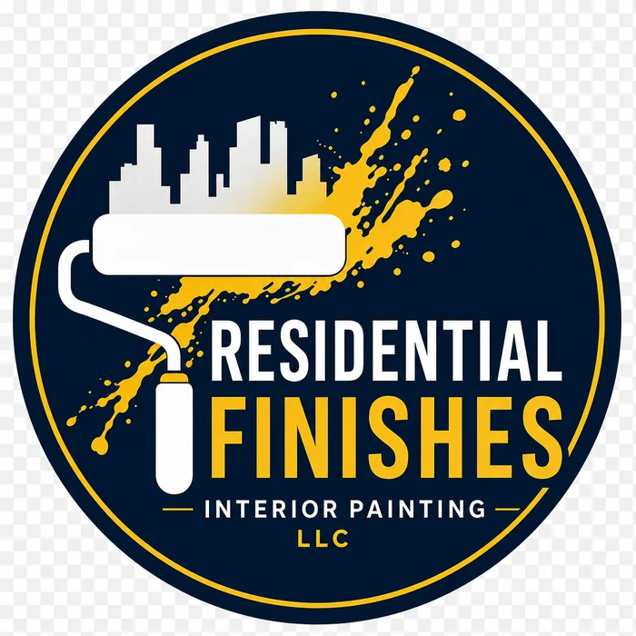
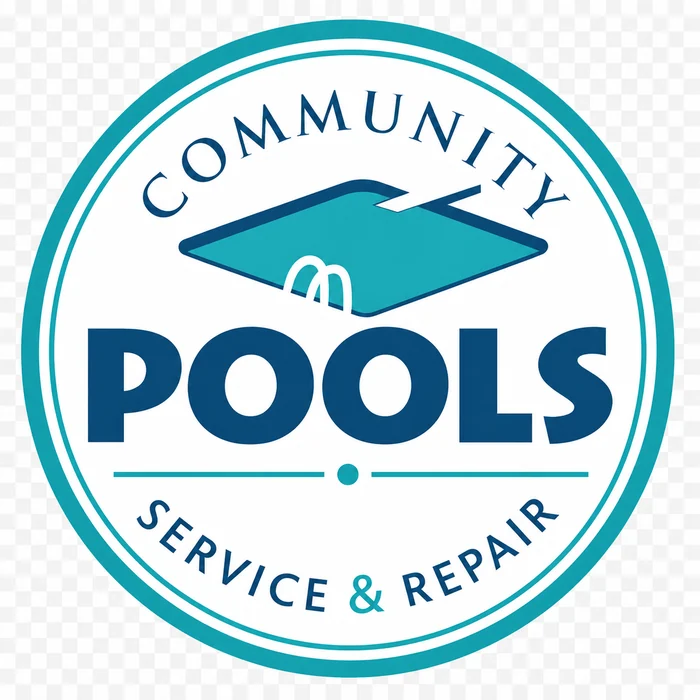
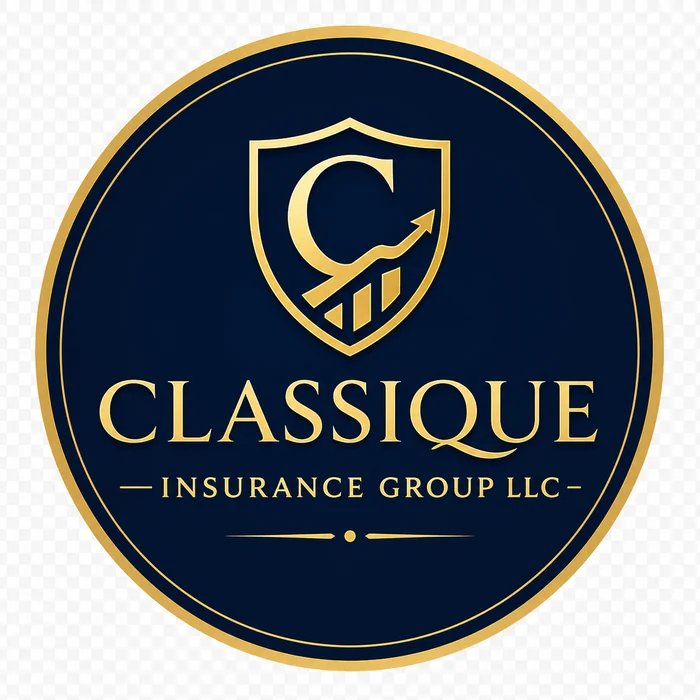
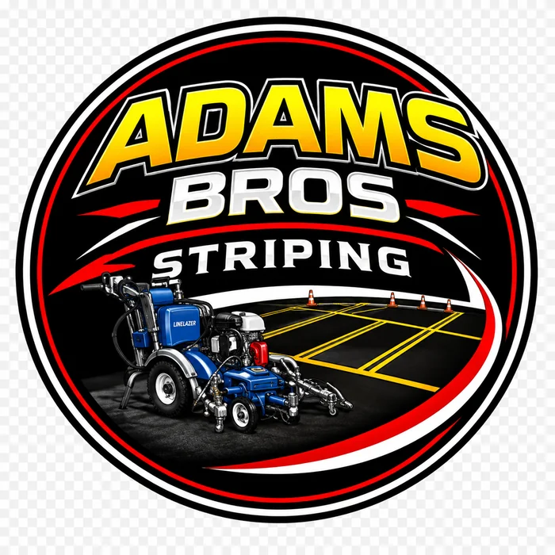

Websites built for real business growth
Premium websites that look sharp, load fast, and turn visitors into action.
Wavy Sites helps small businesses, ministries, creators, and local service brands launch clean, trustworthy, conversion-focused websites with SEO, forms, deployment, and post-launch growth in mind.
Mobile-first
SEO-ready
Form-ready
Client-ready

Build Formula
Strategy + Design + SEO + Forms + QA
A full website pipeline designed to help every project leave your hands polished and ready for deployment.
What Wavy Sites builds
Services that move the needle.
Every service is shaped around clarity, trust, conversion, and a clean launch path.
Website Design & Development
Custom websites for service businesses, ministries, local brands, creators, and organizations that need to look professional online.
Website Redesigns
Modernize an old site, fix weak layouts, improve mobile usability, clean up messaging, and make the brand feel current.
Landing Pages
Focused pages for Google Ads, social campaigns, special offers, service pushes, events, donations, and quote requests.
Local SEO, AEO & GEO
Titles, descriptions, headings, schema, FAQs, service areas, alt text, sitemap, robots file, and local trust signals.
Forms & Lead Flow
Quote forms, contact forms, job inquiry forms, thank-you pages, Netlify-ready markup, and clear follow-up paths.
Maintenance & Growth
Updates, content improvements, social/Google Business support, landing page optimization, and monthly website care.
More than a pretty page
A full digital presence system.
A strong small-business website should answer the customer’s questions before they ask, show proof quickly, and make the next step obvious.
View the full client roadmapHero copy that clearly explains what the business does, who it helps, and where it serves.
Proof sections, galleries, real projects, reviews if provided, and credentials only when verified.
Services, products, menus, galleries, models, or programs organized around how customers think.
Clear CTAs, easy forms, mobile-friendly buttons, and a thank-you path that works after launch.
Recent work
Projects built with business purpose.
Portfolio cards are structured for trust, proof, and fast project review. Update links as each client site goes live.

Local service website
Residential Finishes
Interior finishing website with quote-focused layout, before/after proof, local visibility, and client-ready form flow.
Visit site
Community website
Aunt Tiff’s Place
Warm outreach website with clear mission, services, donation direction, reviews, and welcoming user flow.
Visit site
Lead generation page
Community Pools
Pool service presence built around resurfacing, repair needs, local service areas, and quote conversion.
Visit site
Professional services
Classique Insurance
Trust-first insurance website direction with family-centered visuals, service clarity, and polished credibility.
Visit site
Trade service website
Adams Striping
Bold service layout with project proof, local SEO structure, and practical conversion improvements.
Visit site
Next launch
Your Project Here
Every new build follows the Wavy Sites roadmap: strategy, design, forms, SEO, deployment, QA, and handoff.
Start a projectMaximum-capacity workflow
Built from one repeatable system.
The same roadmap used for Wavy Sites client builds is included in this package so every AI, developer, or teammate can follow the same standard.
Every project should ship with:
- Business strategy and customer journey
- Premium responsive design
- Working forms and thank-you flow
- SEO, AEO, GEO, metadata, schema
- Deployment QA and client handoff
How it works
Simple process. Real structure.
A focused build path keeps the project moving without losing quality.
Discover
Collect the business goal, services, service area, customer type, assets, competitors, and conversion target.
Plan
Map the homepage journey, required pages, proof sections, CTA hierarchy, SEO targets, and launch requirements.
Build
Design and develop the site with mobile-first structure, organized assets, strong copy, and reusable patterns.
Optimize
Add metadata, schema, sitemap, robots, image alt text, service-area language, performance improvements, and accessibility polish.
Launch
Deploy to Netlify or Vercel, test live forms, check mobile, verify links, and hand off a client-ready package.
Ways to work
Choose the level of support that fits the client.
Website-Only Build
For clients who need a custom site delivered, deployed, and ready to manage.
- Homepage or multi-section build
- Mobile-first design
- Basic SEO setup
- Working contact or quote form
- Deployment guidance
Full Digital Presence
For clients who want the website plus growth strategy and post-launch support.
- Everything in Website-Only
- SEO/AEO/GEO improvements
- Google Business and social direction
- Landing page/ad readiness
- Maintenance and content options
Questions clients ask
Clear answers before the first call.
FAQ content helps customers understand the process and gives search engines cleaner answers to index.
What kind of businesses does Wavy Sites help?
Wavy Sites is built for small businesses, local service companies, ministries, community organizations, creators, restaurants, consultants, and brands that need a professional online presence.
Can you redesign an existing website?
Yes. The process starts by inspecting what already works, identifying what is broken or weak, and improving the site without removing important content or approved design direction.
Do Wavy Sites builds include SEO?
Yes. Core SEO includes page titles, meta descriptions, heading structure, alt text, internal links, schema when appropriate, sitemap, robots file, and local/service-area language.
Will the website work on phones?
Yes. Mobile layout is treated as a launch requirement, including readable text, tap-friendly buttons, clean stacked cards, no horizontal overflow, and easy-to-use forms.
Can the site connect to Netlify or Vercel?
Yes. Static sites can be deployed on Netlify, while React/Vite or Next.js projects can be deployed on Netlify or Vercel depending on the project needs.
Start your project
Tell Wavy Sites what you’re building.
Send the project goal, business type, current website if you have one, and what you need the site to do. The best projects start with clear direction.